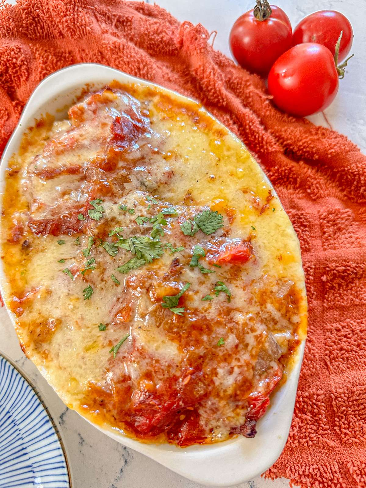

Baked pork chop rice is a Hong Kong-style comfort dish featuring juicy, breaded pork chops atop a bed of fried rice, all smothered in a rich tomato sauce and baked until golden. The tender pork contrasts with the savory rice, while the sauce adds a tangy, slightly sweet flavor.